数量关系分章梳理
按十六章整理。每一节写清怎么识别、和相邻考法差在哪，并配笔记里的例题。打印选 A4，即可另存为 PDF。
第一章 倍数特性
看见选项和题干能构成倍数关系。
差别解题总思路：结合选项用倍数先排除，排除不完再代入。
整除型
看见问能否整除，或总数要被某个数整除。
差别有口诀用口诀，没口诀再拆分，复杂倍数再因式分解。
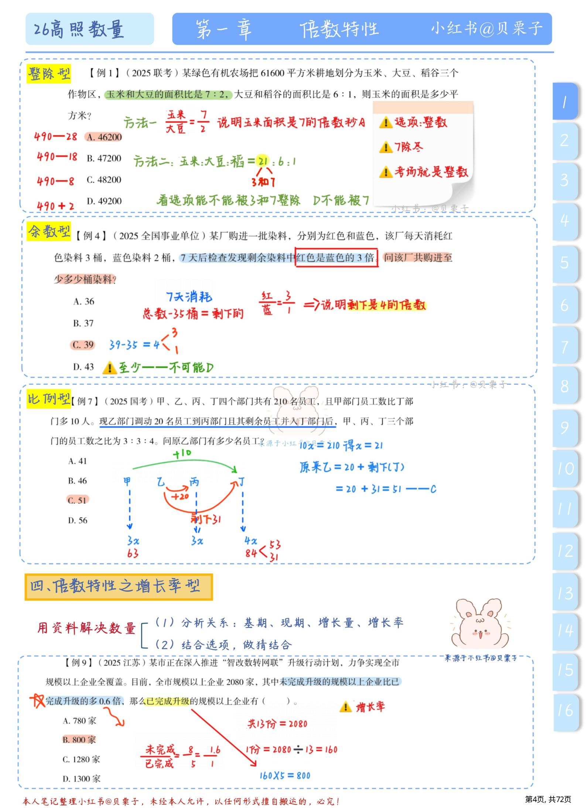
面积、染料、人数调动，都是先看能不能被选项里的数整除。
口诀法
看见3、9 看各位数字之和；2、5 看末位；4、25 看末两位；8 看末三位。
差别能被口诀整除，就不必再拆。
拆分法
看见用于 7、11、13，没有简单口诀。
差别一个数按逗号从右往左三位一组，各组交替相减，只看结果能否被 7、11、13 整除。
因式分解
看见6、12、18、24 这类复合倍数。
差别拆成两个互质因数，同时能被这两个数整除。互质指没有公约数。
余数型
看见平均分后还剩几个，或多几个、少几个。
差别总数写成 ax+b。总数减 b 之后能被 a 整除。公务员思想是词分、多退少补。
苹果均分后剩下的个数，先减掉余数，再看能不能被人数整除。
比例型
看见出现分数、比例、百分数、倍数，或人数、车辆、年龄这类不可分割的整数。
差别先找和分、分母的关系，再按选项代入。
A/B = C/D
看见两个比相等。
差别交叉相乘，或把比写成同一份数。
A 与非 A
看见一部分和其余部分。
差别甲占整体的几分之几，其余就是 1 减这个分数。
倍数特性之增长率型
看见基期、现期、增长量、增长率里有倍数。
差别用资料分析的增长关系，再结合选项。
倍数特性之 A=B×C
看见一个总量等于两个量相乘。
差别形式是 A=B×C，给单个量。方法用赋值或短除法。
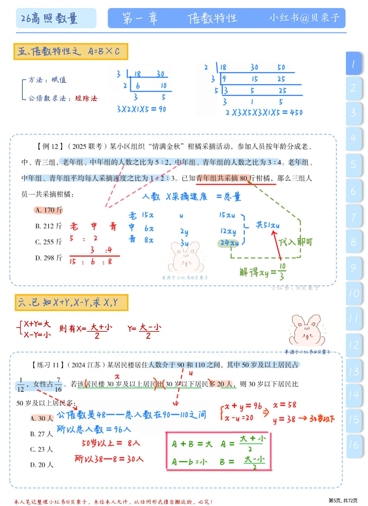
采摘人数和人均产量相乘得到总量，用短除找公倍数。
第二章 方程问题
看见题干能列出等量关系。
差别一个未知数用普通方程；多个未知数先看方程够不够。
普通方程
看见只有一个未知数。
差别设小不设大，出现比例先设份数，有中间量就设中间量。然后找等量关系，再约分。
普通方程组
看见多个未知数，方程个数够。
差别设 x、y、z，抓住能消元的那个条件。数据小可以用代入。
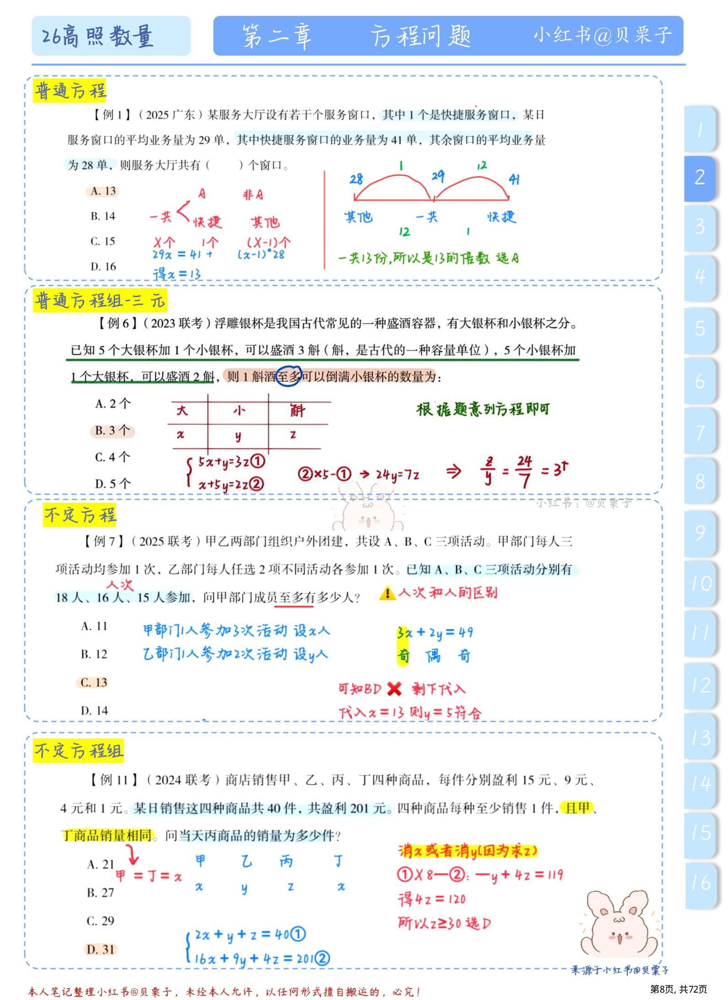
窗口、容量、部门人次都是先设元，再消元。
不定方程
看见一个方程，两个或更多未知数。
差别ax+by=M。看奇偶、倍数、尾数，再代入。某个未知数的值如果要问倍数，就回到倍数特性。
不定方程组
看见方程个数比未知数少。
差别先分未知数是不是整数。
整数型
看见人数、个数，必须是整数。
差别主流考法：先消元，化成不定方程，再按不定方程代入。
非整数型
看见单价、时间，可以是小数。
差别赋零法：让其中一个未知数为 0，比凑整更快。
第三章 周期问题
看见出现循环、周期、星期或日期。
差别先判断是余数、相遇，还是星期日期。
周期余数
看见问第几个，数据很大，或问号很多。
差别先找周期的起点和长度，总数除以周期长度得到余数。第 n 个对应余几，余数 0 就是周期最后一个。
第 2019 株树，用 2019 除以树种周期，余数对应该种哪一种。
周期相遇
看见多个小周期，问下次再同时出现。
差别用最小公倍数。
星期日期
看见问某一天是星期几，或一段日期里有几个星期几。
差别平年 365 天，闰年 366 天。大月 31 天，小月 30 天，2 月平年 28、闰年 29。每 7 天各星期各 1 天，每连续 28 天各 4 天。十二生肖 12 年一轮。
第四章 工程问题
看见出现效率、工作量、完工时间，或牛吃草。
差别有具体效率就列方程。多个主体的完工时间，先赋总量。
具体单位型
看见给出具体效率或总量。
差别直接列方程。
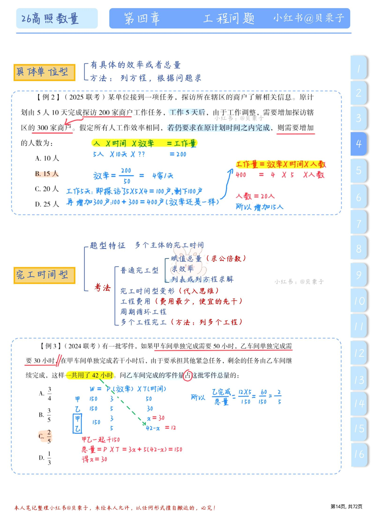
探访商户、车间零件，都是总量除以效率。
完工时间型
看见多个主体一起做，问完工时间。
差别赋总量为公倍数。合作、周期循环、多个工程都先赋总量。复杂方程不会解就代入选项。
效率比例型
看见直接给效率比，或只给人数、机器数。
差别工作量相等时，效率和时间成反比。人数或机器数先赋成 1，再求效率比。
变形题
看见给总量比和时间比，求效率比。
差别可以设未知数，也可以因为是比例而直接赋值。
牛吃草
看见原有量一边被消耗，一边又在生长。
差别公式 y=(N-x)×T。y 是原有量被消耗的部分，N 是使原有量消耗的速度，x 是生长速度，T 是时间。
五种问法
看见问原有量、最多能吃多久、多少头牛、或草长多少。
差别都回到同一公式，先分清谁是 N、谁是 x。
四种变形
看见牛换算成羊、单个效率乘人数、持续生长、牛的效率会变。
差别变形之后仍用 y=(N-x)T，不要另起公式。
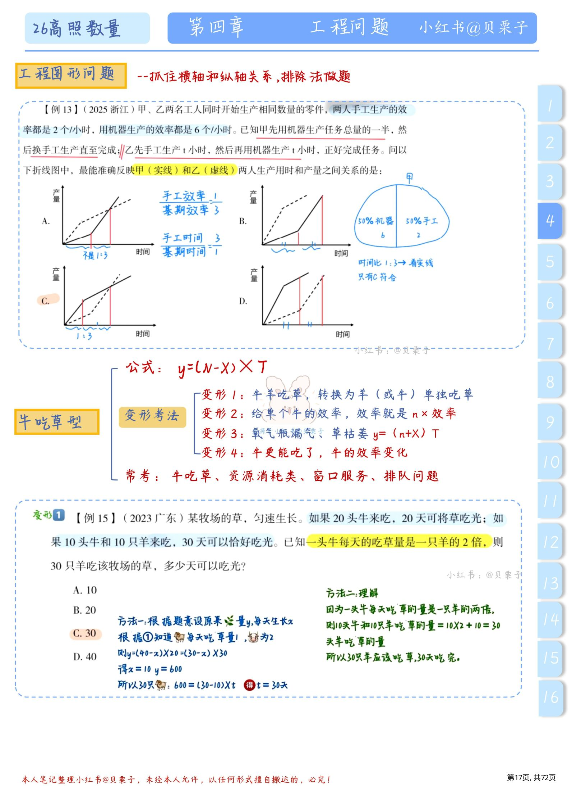
排队入口、自然损耗、接种台数，都是牛吃草变形，一边减少一边增加。
第五章 几何问题
看见出现图形的周长、面积、体积、路径或最值。
差别先套公式。三角形和最值、放缩是高频变形。
几何公式
看见问周长、面积、表面积、体积。
差别正方形、长方形、圆、三角形、梯形、柱体、锥体、球体按对应公式。弧长和扇形用圆心角占 360° 的比例。
三角形
看见题干是三角形，或能拆成三角形。
差别先看是普通、直角、等边、同底同高，还是相似。
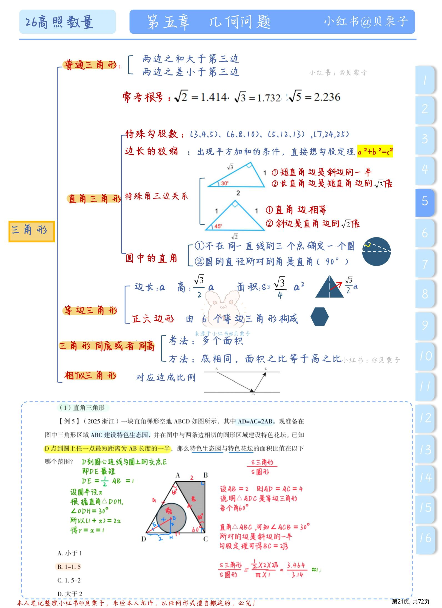
空地上的直角梯形和圆，先用勾股或直角边关系把边长定下来。
普通三角形
看见只给三边关系。
差别两边之和大于第三边，两边之差小于第三边，两条同时满足。
直角三角形
看见有直角，或出现平方和。
差别勾股数优先：3、4、5 及其倍数，6、8、10，5、12、13。30° 所对直角边是斜边的一半。45° 两直角边相等，斜边是直角边的√2 倍。
等边三角形
看见三边相等。
差别边长 a，高是 √3/2×a，面积是 √3/4×a²。正六边形由 6 个等边三角形拼成。
同底或同高
看见两个三角形共用底或高。
差别高相同，面积比等于底之比。底相同，面积比等于高之比。
相似三角形
看见对应角相等。
差别对应边成比例。
圆中的直角
看见三角形和圆放在一起。
差别不在同一直线的三点确定一个圆。直径所对的圆周角是直角。
最短路径
看见问两点到一条直线的距离之和最短。
差别两点在直线同侧，作对称点再连线。两点在异侧，直接连线。
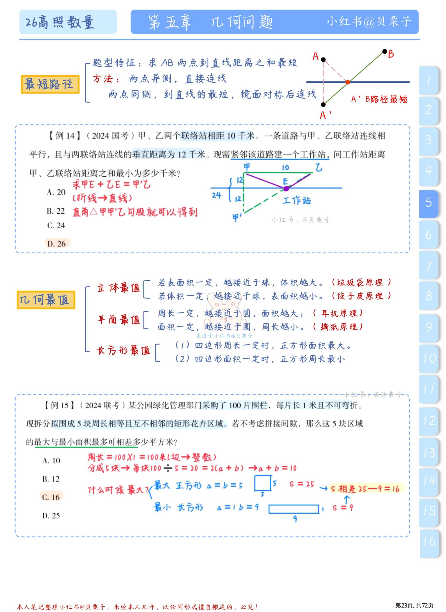
工作站到甲、乙的距离之和，把同侧的点对称到直线另一边再连。
几何最值
看见问面积或体积的最大、最小。
差别立体：表面积一定，越接近球体积越大；体积一定，越接近球表面积越小。平面：周长一定，越接近圆面积越大；面积一定，越接近圆周长越小。
同比例放缩
看见图形变成原来的 N 倍。
差别角度不变。周长变 N 倍，增长 N-1 倍。面积变 N² 倍，增长 N²-1 倍。体积变 N³ 倍，增长 N³-1 倍。
第六章 经济利润问题
看见出现成本、售价、利润、打折。
差别先用基本公式。计费规则到某个点就变，改分段。问总利润最高，改函数最值。
基本经济公式
看见进价、售价、利润、利润率、打折。
差别进价加利润等于售价。利润率等于利润除以成本。售价等于单价乘数量。打折是售价乘折扣。
资料分析
看见基期、现期、增长量、增长率。
差别利润率等于利润除以成本。总量 A=B×C 时用赋值。
方程法
看见等量关系清楚。
差别列表，设未知数，按等量列式。
赋值法
看见给比例，求比例，或三个量只知一个。
差别给一个量赋值，再求另一个。
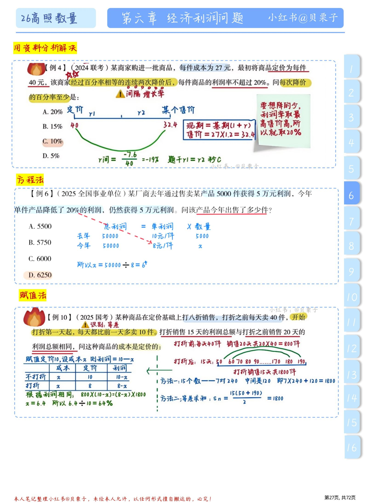
两次降价、利润率不超过 20%，用定价、成本和利润率的关系列式。
分段计费
看见超过某个点之后单价变了。
差别先分段，再汇总，各段不重不漏。设未知数时不要设总长度，设最后一段更好算。
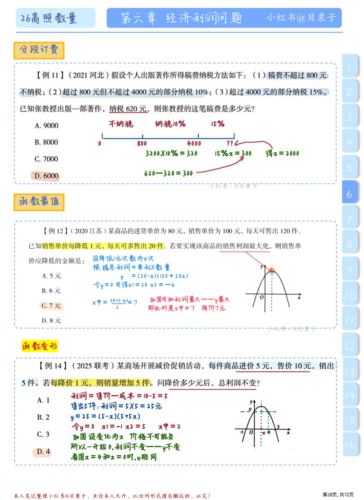
稿费超过额度后税率变了，分成两段分别算税。
函数最值
看见单价下降、销量上升，问总利润最高。
差别写成 y=(a-x)(b+x)。非整数时就近取整。使方程等于 0 的两个 x 的平均数，就是 y 最大的点。
第七章 最值问题
看见出现至少、至多、保证、最少。
差别先看是最不利、构造数列，还是反向构造。
最不利构造
看见保证、无论如何、至少。
差别每种情况先取到差 1 个，最后再加 1。和排列组合结合时，先按最不利取，再套排列组合。
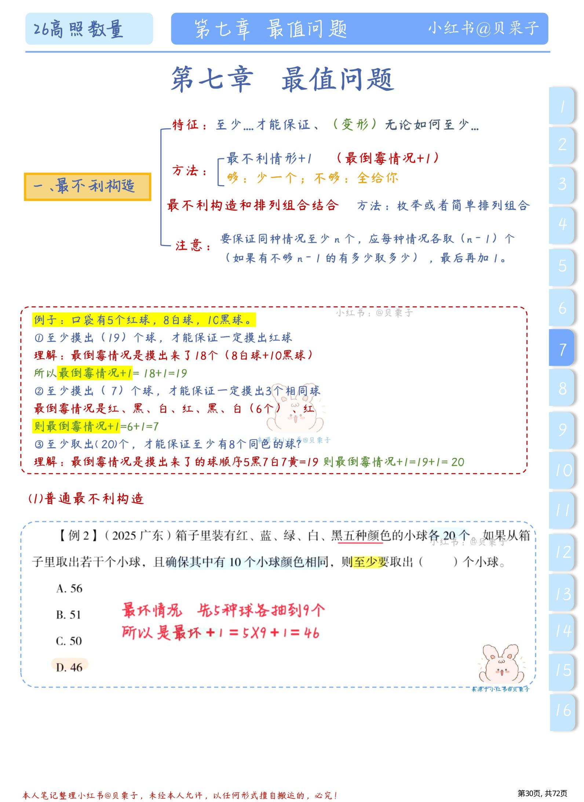
要保证摸到同色，先把每种颜色都摸到差一个，再多摸 1 个。
构造数列
看见某个主体最值，或排名第几的最值。
差别构造一个名次，求谁设谁，反向捏其他为正，再加和。要问主体个数是否相同，答案不是整数时反向取整。总量未知时，总量是一个范围，用极端值。
多集合反向构造
看见都满足的最少、至少。
差别先反向，把都满足变成加和再作差。总数减去每种都不满足的 (n-1) 份。
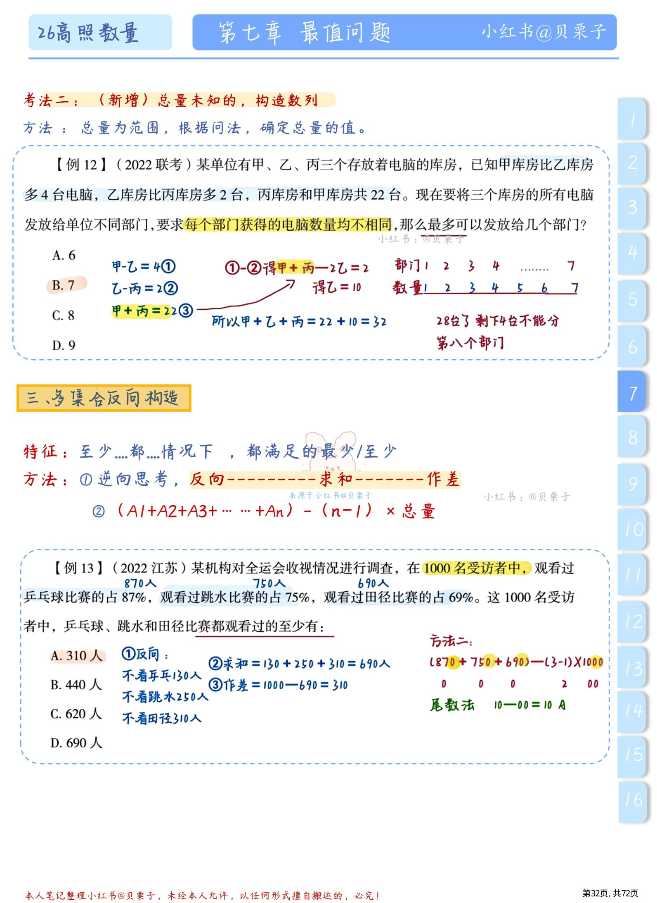
三项比赛都看过的至少人数，用总人数减去每项没看过的人。
第八章 容斥原理问题
看见出现都参加、只参加、都不参加。
差别两个集合用两集合公式。三个集合先看是标准型还是非标准型。
两集合
看见只有 A、B 两类。
差别A+B-A∩B=总数-都不。
三集合
看见A、B、C 三类。
差别标准型减去三个两两交集，再加三个交集。非标准型用满足两项、满足三项来列。
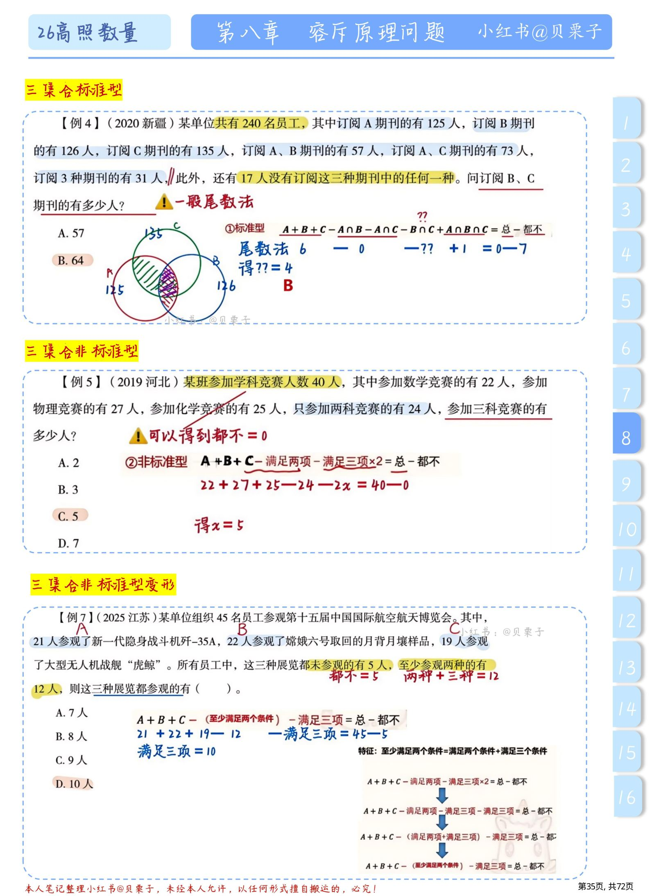
订期刊、参加科目，都是三集合：先分只参加两科和参加三科。
画图法
看见只参加某一项，或参加了 A 但不参加 B。
差别三步：画圈，从里到外标数字且不重复，再列算式。
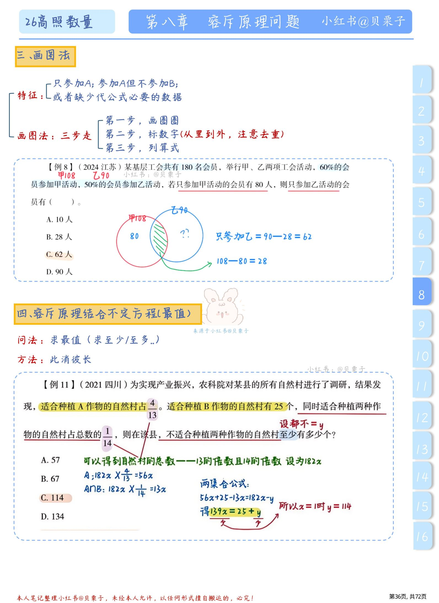
只参加乙活动的人数，从图的最里面往外标，避免重复。
结合不定方程
看见问最值。
差别容斥列出不定方程后，用最值的方法消掉多余未知数。
和周期结合
看见编号、倍数同时出现。
差别先求各集合和交集，再代容斥公式。
第九章 等差数列和等比数列
看见一组数依次相差相同，或依次乘同一个数。
差别等差考得多。等比考得少，不会公式就枚举。
等差数列
看见后一项减前一项是定值。
差别通项 an=a1+(n-1)d。性质 an-am=(n-m)d。
求和
看见问前 n 项的和。
差别有中项时优先用中项乘项数。奇数项时中项就是正中间那一项。
小技巧
看见项数特殊。
差别3 项等差中间项是平均，5、7、9 项同理。既等差又等比，就是常数列。
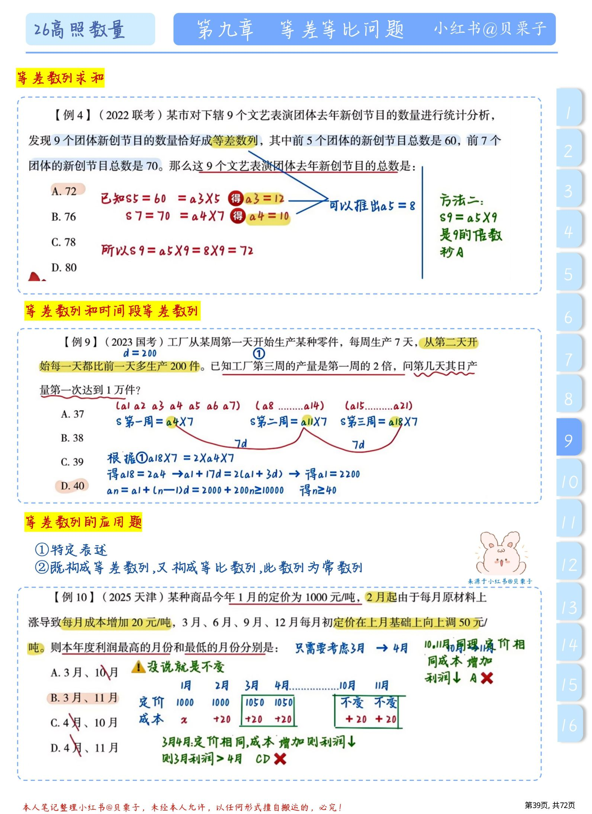
九个节目成等差，用中间项乘项数求总和。
等差和时间段
看见按天、按周成等差。
差别把周或月当成项，先写通项再求和。
应用题
看见产量、成本逐期成等差。
差别先判断项数和公差，再决定用通项还是求和。
巧求两数之差
看见两个未知数成等差，又给了总和或收入。
差别和与差可以互相求出两个数。
64 的秘密
看见反复去掉奇数编号，问最后剩下谁。
差别剩下的编号是不大于总数的最大 2 的幂。
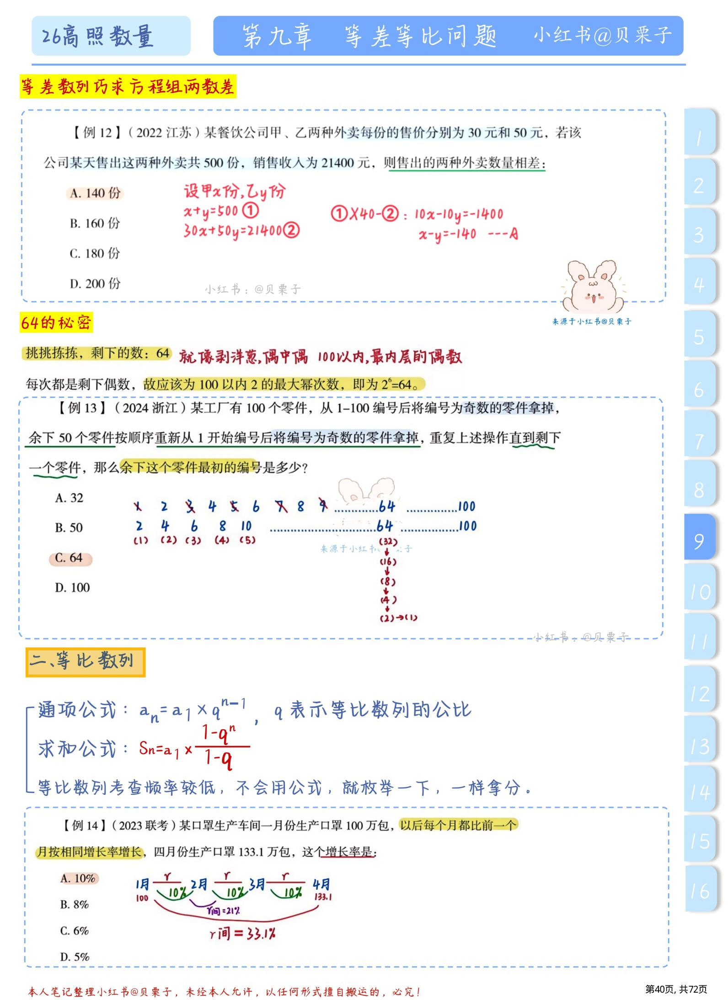
100 个零件反复去掉奇数编号，用 2 的幂找最后剩下的原编号。
等比数列
看见后一项是前一项乘定值 q。
差别通项 an=a1×q 的 n-1 次。求和是 a1×(1-q 的 n 次)/(1-q)。考得少，可以枚举。
第十章 行程问题
看见出现速度、路程、时间。
差别路程=速度×时间。先分基础行程、相对行程、比例行程。
基础行程
看见一个物体自己走。
差别画图，再列式。1 米/秒=3.6 千米/时。只给时间或速度比，可以赋具体值。
普通行程
看见匀速直线。
差别S=vt。
火车过桥
看见车有长度。
差别过桥：桥长加车长=vt。在桥：桥长减车长=vt。
匀加速
看见速度均匀变化。
差别平均速度=(初速度+末速度)/2。
等距离平均速度
看见两段路程相等。
差别平均速度=2v1v2/(v1+v2)。用于直线往返和上下坡往返。
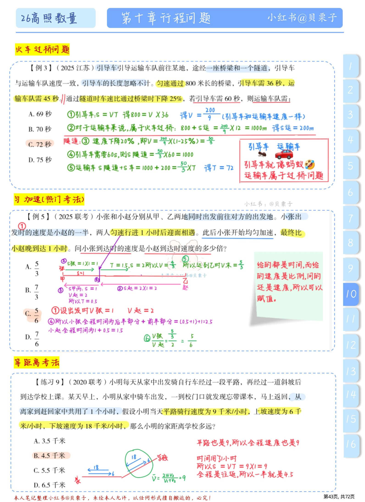
过桥、过隧道要先分清用的是桥长加车长，还是桥长减车长。
相对行程
看见两个物体都在动。
差别先看是同一条直线，还是环形。
直线相遇
看见相向。
差别路程和=(v1+v2)t。
直线追及
看见同向。
差别路程差=(v1-v2)t。追及的路程差是开始时拉开的距离。
环形
看见同一条闭合跑道。
差别相遇路程和是若干圈。追及路程差是若干圈。
多次相遇
看见问第几次相遇。
差别两端出发，第 n 次相遇的路程和是 (2n-1) 段单程。同端出发，第 n 次是 2n 段单程。
流水行船
看见有水流。
差别顺水=船速+水速，逆水=船速-水速。船速=(顺+逆)/2，水速=(顺-逆)/2。
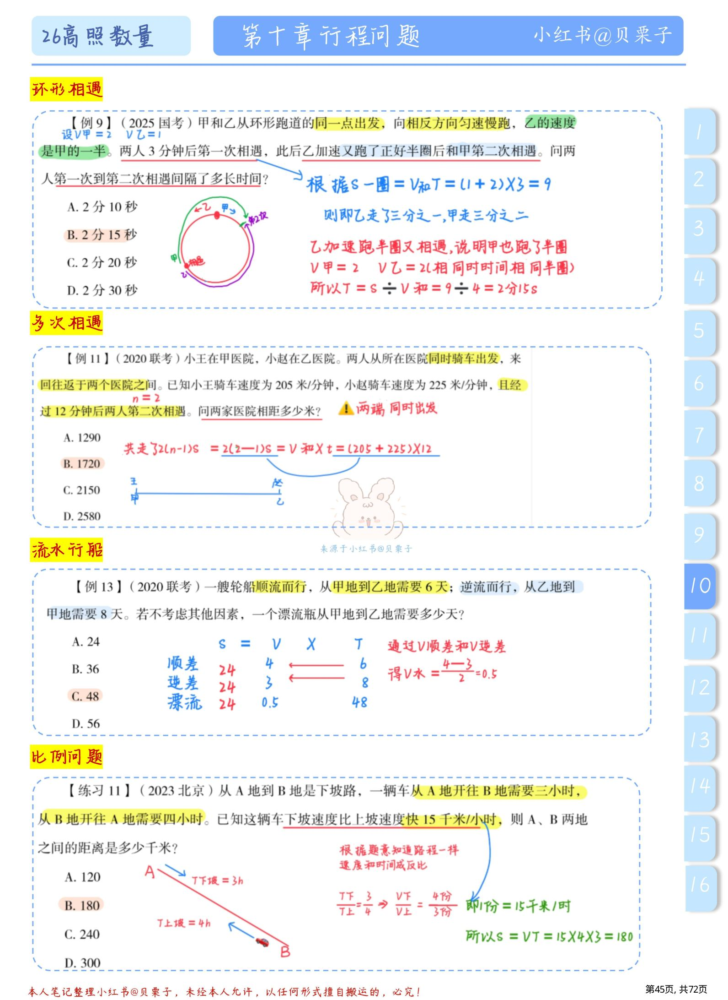
顺流 6 天、逆流 8 天，先求船速和水速，再求漂流只靠水速要多少天。
比例行程
看见S=vt 里有一个量相等。
差别S 相等，v 和 t 成反比。v 相等，S 和 t 成正比。t 相等，S 和 v 成正比。
第十一章 排列组合问题
看见问有多少种排法、选法。
差别分类用加法，分步用乘法。从选出的主体里任选两个对调，顺序变了就是排列，不变就是组合。
分类思想
看见出现至少。
差别正向是把各类情况加起来。反向是总数减去不满足的。哪边情况少用哪边。
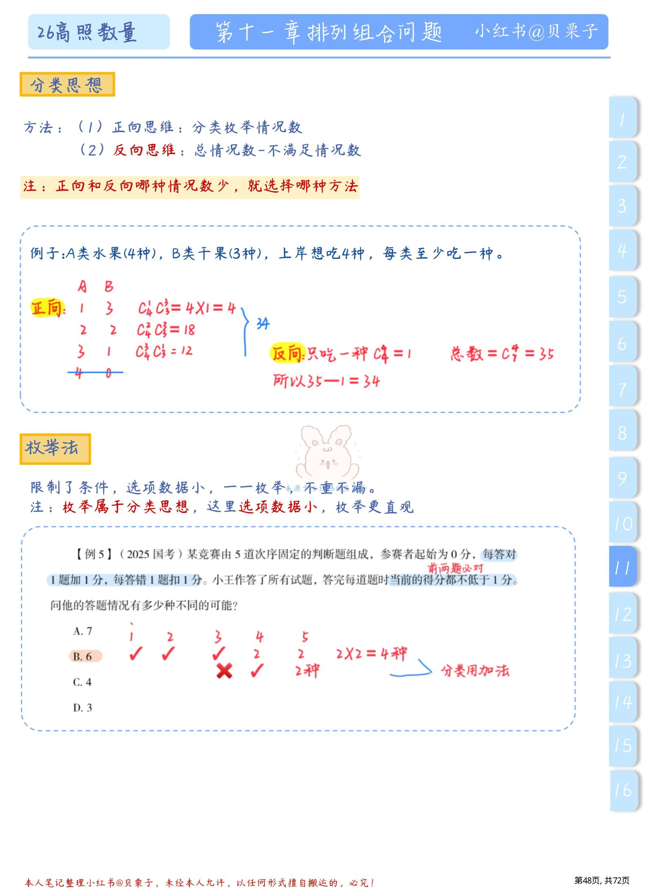
吃 4 种且每类至少 1 种，情况少就正向加，情况多就用总数减。
枚举
看见选项数据小，限制条件少。
差别一个一个数，不重不漏。枚举本质上就是分类。
捆绑法
看见要求相邻，必须在一起。
差别先把相邻的绑成一个小整体，再和别人一起排。
插空法
看见要求不相邻，不能在一起。
差别先排可以相邻的人，形成空位，再把不相邻的人插进去。
甲乙必须相邻就先捆绑；必须分开就先排别人再插空。
插板法
看见每人至少一个。
差别公式是 C(n-1, m-1)。同类先分开，不同类分数量。每人至少 4 个，就先给每人分 3 个再插板。
错位排列
看见不能回原位。
差别1 个是 0，2 个是 1，3 个是 2，4 个是 9，5 个是 44。
环形排列
看见n 个人围成一圈。
差别线形排列数除以 n，也就是 A(n,n) 再除以 n。
平均分组
看见分成若干组且组与组没有区别。
差别先按组内排列，组与组相同再除以组数的阶乘。
第十二章 概率问题
看见问可能性、概率。
差别概率=满足情况数/总情况数。反向是 1 减不满足的概率。
给情况求概率
看见数得清满足和总数。
差别直接相除。反向用 1 减。
给概率求概率
看见题目已经给出各步概率。
差别分类用加法，分步用乘法。一般先赋总值 1000，再算残次品各等级数量。
分类思想
看见至少、至多。
差别正向把各类概率相加，反向用 1 减。哪边少用哪边。
几何概率
看见在长度或面积上随机取点。
差别用满足条件的长度或面积，除以总长度或总面积。
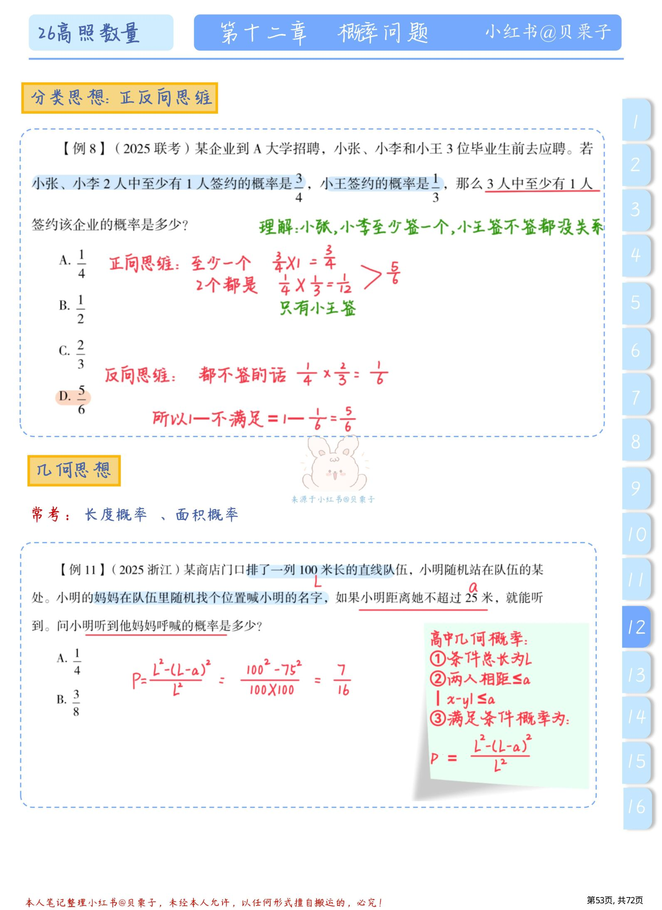
100 米队伍里随机站位，相距不超过 25 米的概率用长度比。
跟屁虫
看见几个人坐成一排，问相邻的概率。
差别先固定一个人为 1，再从剩下的位置里数满足的座位。多人就依次做。
比赛类概率
看见三局两胜、五局三胜，或胜负概率。
差别到了能分出胜负就停止。限定场次时按枚举。
抓阄密码类
看见每次可能性相同。
差别每次抽到的概率相同，不必按顺序越来越小。
骰子问题
看见掷骰子。
差别两个骰子共 36 种等可能结果，数出点数之和满足条件的格子。
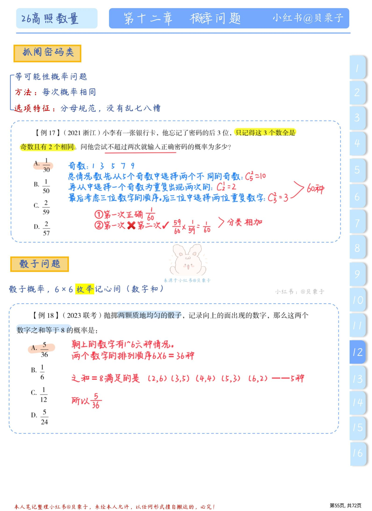
点数之和等于 8，在 6×6 的表里数格子。
第十三章 年龄问题
看见问今年多少岁，或过几年。
差别年龄差永远不变。每过 N 年，每个人都长 N 岁。
知识点
看见年龄差、整岁。
差别年龄差不变。年龄倍数会越来越小。出生当年按 0 岁，母亲比孩子大的岁数就是出生时母亲的年龄。
列表法
看见条件清楚。
差别能代入年龄就代入。不好代入就列方程。年龄题贴近生活，要结合常识排除。
和不定方程结合
看见只知年龄和、年龄差。
差别未知数是整数，按不定方程代入选项。
年龄差不变。平方年是年龄的平方恰好等于那一年。
年龄和年龄的平方
看见年龄的平方等于年份。
差别平方数等于那一年的年份。例如 44²=1936，45²=2025。
属相和本命年
看见属相相同，或本命年。
差别十二生肖 12 年一轮。本命年也按 12 年。
第十四章 溶液问题
看见出现浓度、溶质、加水、蒸发。
差别溶质=溶液×浓度。浓度=溶质/溶液。
解题方法
看见混合或稀释。
差别等量混合，浓度取平均。等浓度混合，浓度不变。线段法把部分写两边、整体写中间，距离和量成反比。
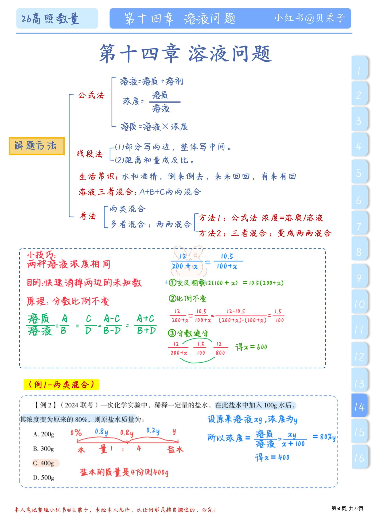
加入 100 克水后浓度变成原来的 80%，溶质没变，求原来有多少溶液。
两者混合
看见两种溶液混成一种。
差别用线段法或十字交叉。
三者混合
看见三种溶液。
差别可以先两两混合，再和第三种混合。
等量变化
看见溶质不变或溶液不变。
差别稀释是加水、溶质不变。蒸发是水减少、溶质不变，再蒸一定量水就是再乘一次浓度。方法可以列表、赋值，或直接求加入、蒸发的水量。
反复操作
看见倒出一部分再加满，重复多次。
差别最后浓度=原浓度×(1-第一次倒出比例)×(1-第二次)×(1-第三次)。
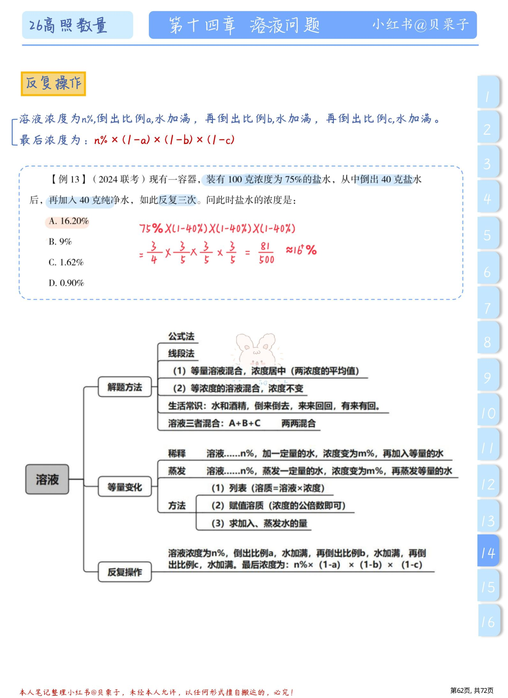
每次倒出 40 克再加满，做三次，浓度连乘剩下的比例。
第十五章 平方数、植树和方阵
看见总数是平方数，或沿边栽树、排队成方阵。
差别平方数先找完全平方。植树先看两端种不种。方阵先分实心还是空心。
平方数
看见总数恰好是某个数的平方，或订购数等于种类数。
差别技巧就是找平方数。
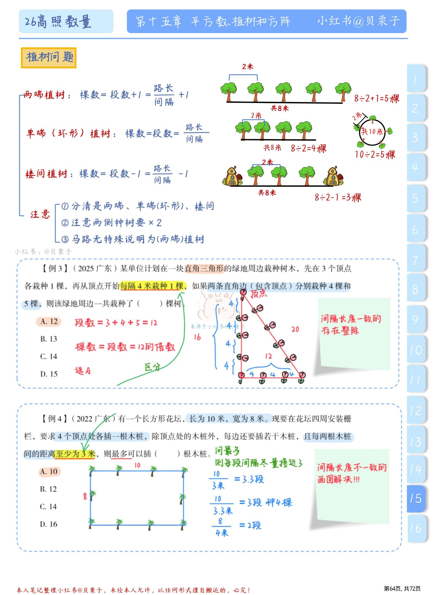
两端都种是间隔加 1，环形是间隔数本身。
植树
看见在一段路或一圈上栽树。
差别先看两端、单端还是楼间。
两端植树
看见两头都种。
差别棵数=间隔数+1。
单端或环形
看见只种一头，或围成一圈。
差别棵数=间隔数。
楼间植树
看见两楼之间，两头都不种。
差别棵数=间隔数-1。
不移动植树
看见改间距后有些树不用挪。
差别先求总长度，再求两种间隔的最小公倍数，最后数不用动的树。
容斥植树
看见两种间隔，重合处不重复。
差别棵数用容斥：两种都种的位置只算一次。
方阵
看见人排成正方形队列。
差别实心总人数=N²。最外一圈=4N-4。相邻两圈相差 8 人。
空心方阵
看见去掉若干外圈或排成空心。
差别求整体时用平方数。去掉一行一列是去掉 2N-1。两个实心方阵合成空心方阵，用平方差。
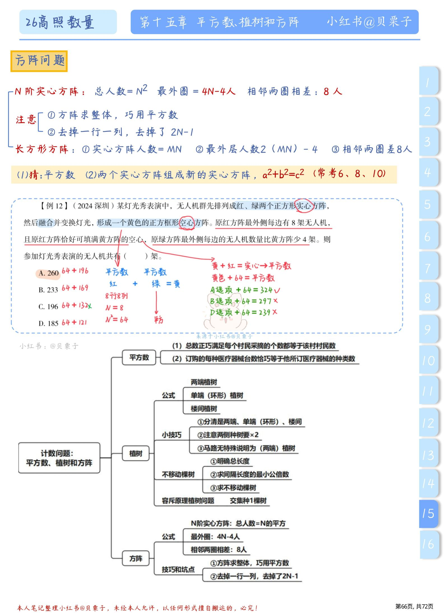
红、绿两个实心方阵合成空心方阵，最外层人数先还原 N。
第十六章 容易拿分小题
看见题干短，能对上固定模型。
差别先对模型，再套该模型的唯一算法。
钟表
看见问时针和分针重合或垂直。
差别分针每分钟 6°，时针每分钟 0.5°，速度差 5.5°/分。24 小时重合 22 次，垂直 44 次。
标 1 法
看见网格里只能向规定方向走。
差别每个路口的走法等于能走到它的路口走法之和。
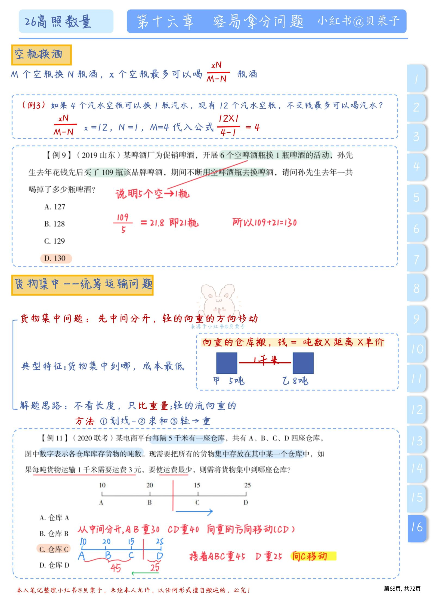
只能向东或向北时，把每个路口的走法标成 1 再累加。
空瓶换酒
看见几个空瓶换一瓶。
差别M 个空瓶换 1 瓶，x 个空瓶最多喝 xN/(M-N)，再向下取整。
货物集中
看见问集中到哪座仓库运费最少。
差别不看距离，只比重量。轻的流向重的。方法是划线、求和、轻的一边流向重的一边。
线切面
看见n 条直线最多把平面分成几块。
差别第 n 条最多比前一条多 n 块。1 条 2 块，2 条 4 块，3 条 7 块，依次加上下一条的条数。
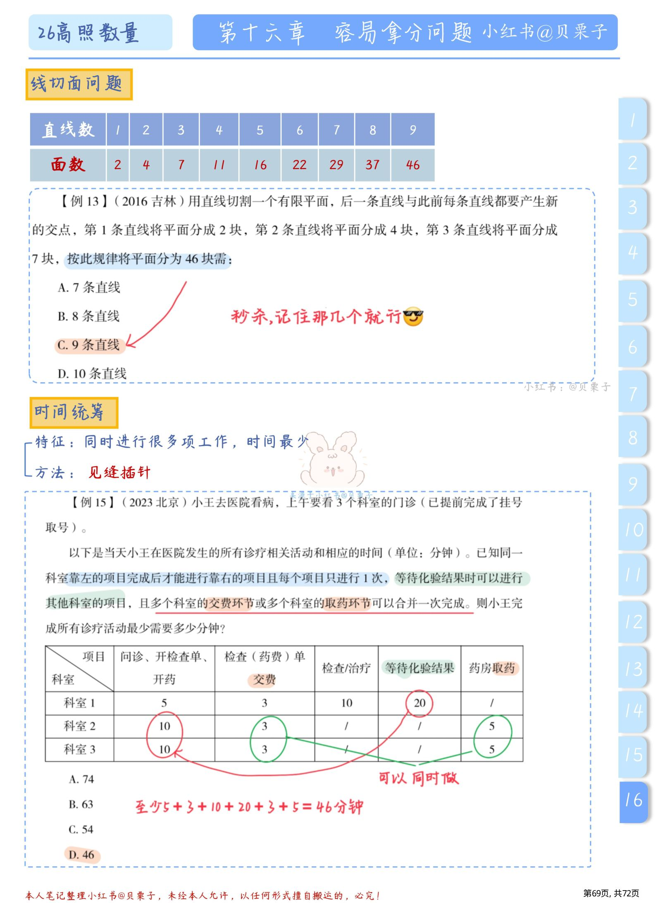
要分成 46 块，按 2、4、7、11…累加，看到刚超过或等于 46 的那一条。
时间统筹
看见几项工作有的能同时做，问最短时间。
差别见缝插针：能同时做的叠在一起，不能同时的首尾相接。
爬楼
看见从 A 楼爬到 B 楼，中间休息。
差别从 1 楼到 N 楼，实际爬 N-1 层，休息 N-2 次。从 M 楼到 N 楼，实际爬 N-M 层，休息 N-M-1 次。
网状图
看见若干点之间找最短总长度。
差别把各段长度相加，去掉重复和绕远的边。
天平
看见用有限砝码称重。
差别砝码放两边是天平称重，只能放一边是天平找假币那类限制。小秘密按 3 的幂想能覆盖的重量。
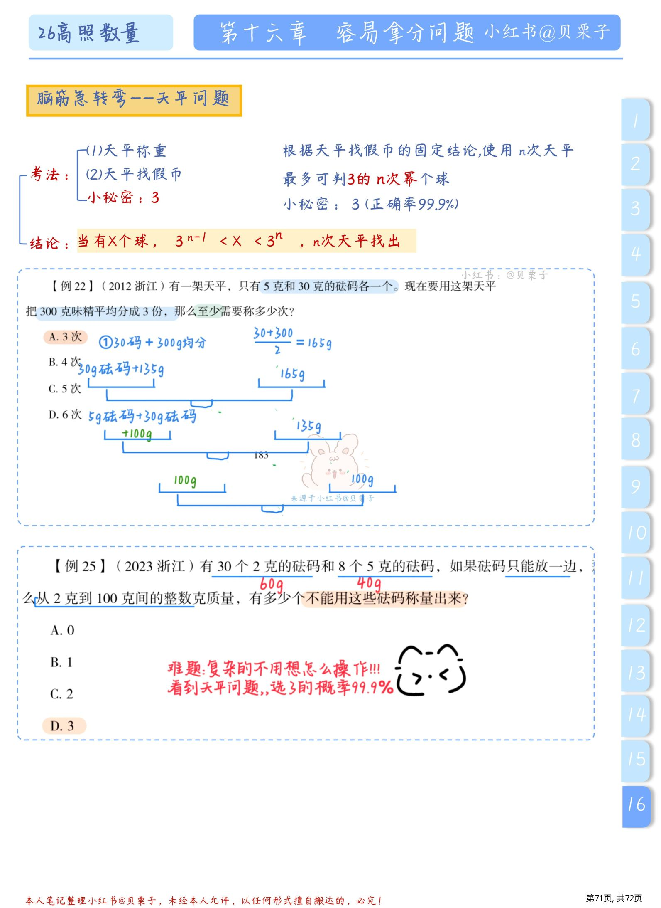
只有两个砝码、只能放一边时，称不出的重量要逐个排除。